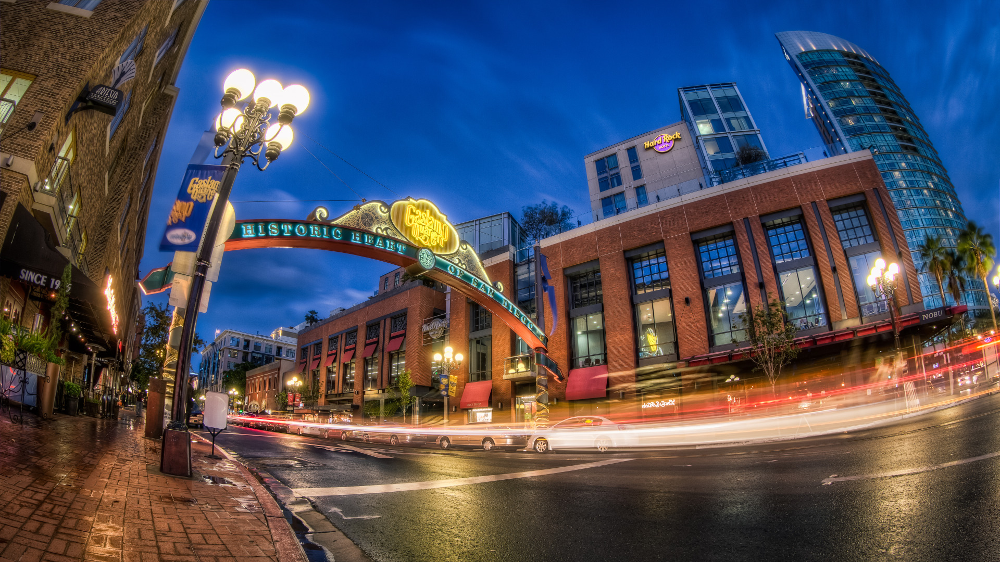
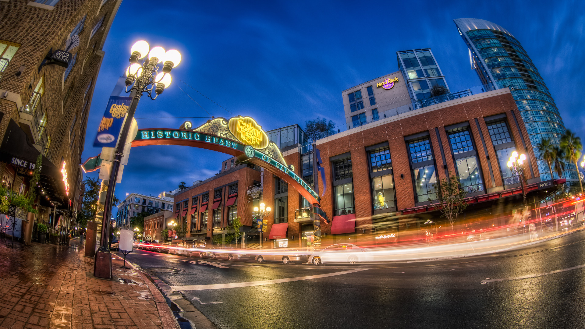

The Grand Canyon
New York City
Maui
Disney World
Jackson Hole
Washington DC
San Diego
"Grand" doesn't begin to do this canyon justice. Measuring approximately 277 miles in length, up to 18 miles in width and a mile deep, this massive chasm in northern Arizona is truly a natural wonder. For six million years, the Grand Canyon has expanded with the help of the mighty Colorado River, and for centuries, people from all over the globe have traveled to gaze out over its red and orange grandeur. Managed by the National Park Service and officially designated as a UNESCO World Heritage site, the Grand Canyon leaves its approximately 4.5 million visitors per year awestruck. (US News)
Cool, cosmopolitan, crowded, constantly evolving … the Big Apple blends big-city splendor with small-town charm. Amid Gotham's iconic landmarks and towering skyscrapers, you'll experience a vibrant culture permeating each of the city's distinctive neighborhoods and boroughs. Follow trendsetters to the East Village and Brooklyn to check out indie boutiques, iconic bakeries and trendy coffee shops. Afterward, peruse the racks of the sleek shops lining Fifth Avenue, admire the cutting-edge art collections at the MoMa and the Met, catch a memorable show on Broadway or sit down for a meal at the latest "it" restaurant. (US News)
Maui is not nearly as large as the Big Island, nor is it as small as Lanai, as bustling as Oahu or as quiet as Kauai. For many Hawaii vacationers, Maui is just right — offering a taste of just about everything the Aloha State has to offer, from impressive wildlife to intriguing history and culture. While on a visit here, you can shimmy alongside professional hula dancers, golf along coastal fairways, snorkel alongside five different types of sea turtles or simply lounge along some of Hawaii's most notable beaches. (US News)
There's no other city in the United States – the world, even – that celebrates childhood quite like Orlando, Florida. The feeling that you get when you catch the light off Epcot Center's Spaceship Earth (found in Walt Disney World Resort, of course); or from your first sip of Butterbeer in Hogsmeade (located inside Universal Orlando Resort); or when you witness the soaring heights of Shamu's flips (during the One Ocean water show at SeaWorld Orlando) – all prove that being a kid is about your state of mind, not age. The notion that only young ones will enjoy this city's charms is just that – a notion. In reality, Orlando has a little of this and a little of that to appeal to all ages, and there's more to do here than visit theme parks. The subtropical climate is great for golfing and the downtown city landscape is too attractive not to explore. (US News)
Sandwiched between Grand Teton National Park to the north and miles of national forest in every other direction, the Jackson Hole valley has remained relatively isolated from the burgeoning travel industry. Instead it has survived on local industries like logging, ranching and, during the 19th century, fur trading. But recently, Jackson Hole has encouraged the rise of tourism. Former blue-collar settlements like Jackson and Grand Teton now boast notable art and performance venues, and mega ski resorts have transformed the region into an up-and-coming winter wonderland. When planning an opulent getaway, many people don't give western Wyoming a thought. To those travelers, we say: Think again. (US News)
With its marbled monuments and high-profile politicos, Washington, D.C., has long been saddled with a reputation as a stuffy government-driven town. A "city of southern efficiency and northern charm," as John F. Kennedy once described it, Washington is often seen by outsiders as slow and inefficient. But these days, our nation's capital is awash with a new energy, transforming itself into an exciting, faster-paced East Coast vacation destination. Although government is still the sun around which this city orbits, the District also offers a host of renowned museums and interesting neighborhoods. And with a recent explosion of restaurants, cafes, boutique shops and clubs, D.C. is transitioning into a thriving cultural hub. As the D.C. Tourism Board is emphasizing through its "DC Cool" campaign, this isn't the Washington you remember from your middle school field trip — it's much hipper than that. (US News)
Consistently sunny weather and 70 miles of magnificent coastline are what draw active types and sun seekers alike to San Diego throughout the year: that and the mouthwatering Mexican cuisine, thriving nightlife and one of the country's favorite zoos. And then there are the beaches: Retreat to Mission Beach to catch a wave, to La Jolla to soak up the sun and to Coronado for a leisurely seaside stroll. When you're ready to ditch your flip-flops and board shorts for more formal attire, you'll find pockets of vivacious nightlife throughout, especially near the historical Gaslamp Quarter. (US News)
❮
❯
 
